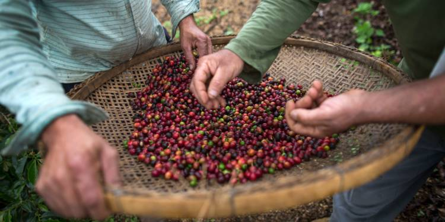

Si ce sont les pays du Nord qui consomment le plus de café dans le monde, c’est dans le Sud que se concentre la production de café. L’importance de ce produit est immense dans toute la planète, c’est même la matière première la plus échangée dans le monde. Le café est originairement issu d’Ethiopie, avant d’avoir été introduit sur toute la planète dans les pays avec des climats propices à sa pousse.
C’est le Brésil qui obtient la palme de la production de café mondiale. Le pays d’Amérique du Sud produit près de 30% de tout le café dans le monde chaque année. Ce chiffre est dû à la taille du pays et à son climat et ses reliefs qui s’adaptent parfaitement à la culture du caféier. Le café produit dans ce pays est l’arabica, un café noble, peu acide. Ce qui en fait le plus apprécié des amateurs à travers le monde. Déguster un café Brésil Bahia, ainsi vous partirez à la découverte de ce pays.
Les plantations de café couvrent environ 27 000 km² de terrain, principalement dans les États du sud (Minas Gerais, São Paulo et Paraná) où l'environnement et le climat offrent des conditions de croissance idéales. Le café est arrivé au Brésil au XVIIIe siècle et le pays est devenu le premier producteur dans les années 1840. L'apogée de la production brésilienne se situe dans les années 1920 quand le pays fournissait 80 % du café du monde.
Le café est également répandu au Vietnam depuis des décennies. Pourtant, son classement à la deuxième place des producteurs est assez récent, depuis les années 2000. Au Vietnam, le principal café produit est le robusta. Les cafés robusta contiennent moins de saveur que l’arabica et sont plus amères. Il est très apprécié en Italie, les expressos originellement étaient 100% robusta. Compilant une production annuelle avoisinant les 1 650 000 de tonnes, il est incontestable que ce pays soit à la fois un gros producteur et consommateur de café. Il tient également sa réputation de son fameux café vietnamien, le café noir mélangé au lait concentré sucré tant apprécié de par le monde. Si la culture a connu un frein considérable du temps de la guerre du Vietnam, le café demeure aujourd’hui l’un des piliers de l’économie locale avec le riz. La croissance de la production est telle qu’elle était de l’ordre de 6 000 tonnes par an en 1975 jusqu’à plus de 1 500 000 tonnes au milieu des années 2010.
La Colombie dispose elle aussi d’une grande tradition de production de café. Son café est apprécié des amateurs pour la richesse de ses arômes et leur finesse. Son corps agréable et fruité en fait l’un des cafés les plus appréciés au monde. Découvrez tous les arômes d’un café Colombie Excelso. Avec une production annuelle tournant à plus de 800 000 tonnes, la Colombie a cependant connu des jours meilleurs en matière de rendement. En effet, le réchauffement climatique trop intense subi par cette partie australe de l’Amérique ainsi que l’augmentation des précipitations en trois décennies ont suffi à détériorer peu à peu les plantations qui peinent à survivre dans de telles conditions.
| Principaux producteurs (Arabica et Robusta) | |||
|---|---|---|---|
| Pays | Production d'Arabica (en millions de sacs de 60kg de grains de café) | Production de Robusta (en millions de sacs de 60kg de grains de café) | Production totale |
| Brésil | 38 | 14 | 52 |
| Vietnam | 1 | 22 | 23 |
| Indonésie | 1.5 | 7.5 | 9 |
| Colombie | 8 | - | 8 |
| Ethiopie | 6 | - | 6 |